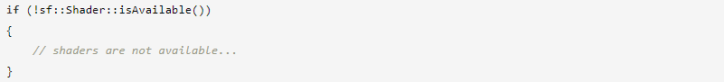
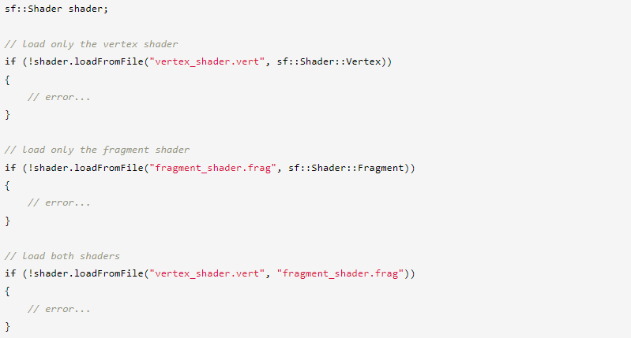
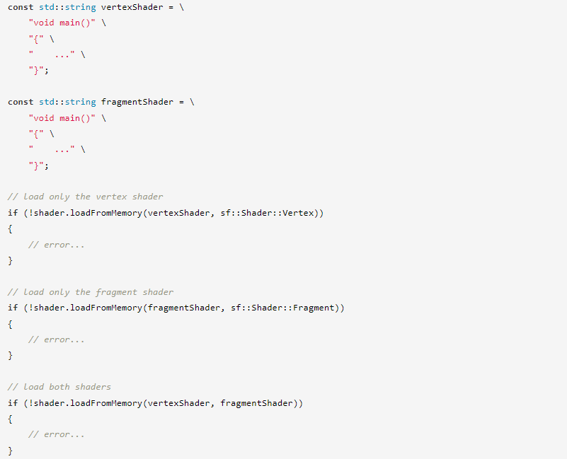
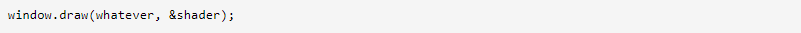
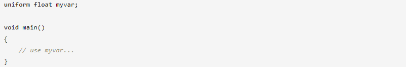
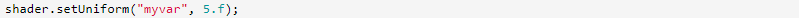
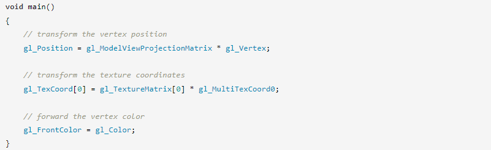
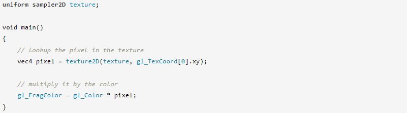
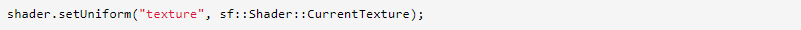
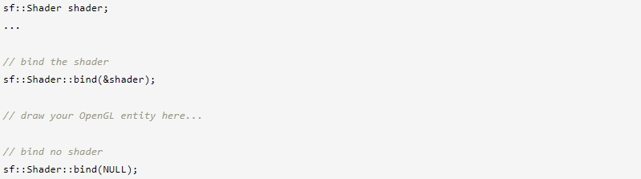

⇐Положение, вращение, масштаб: преобразование объектов
Шейдер — это небольшая программа, которая выполняется на видеокарте. Он предоставляет программисту больший контроль над процессом рисования и более гибким и простым способом, чем использование фиксированного набора состояний и операций, предоставляемых OpenGL. Благодаря этой дополнительной гибкости шейдеры используются для создания эффектов, которые было бы слишком сложно, если вообще возможно, описать с помощью обычных функций OpenGL: попиксельное освещение, тени и т. д. Современные видеокарты и более новые версии OpenGL уже полностью поддерживают шейдеры. на основе, а фиксированный набор состояний и функций (который называется «фиксированный конвейер»), о котором вы, возможно, знаете, устарел и, вероятно, будет удален в будущем.
Шейдеры написаны на GLSL (языке шейдеров OpenGL), который очень похож на язык программирования C.
Существует два типа шейдеров: вершинные шейдеры и фрагментные (или пиксельные) шейдеры. Вершинные шейдеры запускаются для каждой вершины, а фрагментные шейдеры запускаются для каждого сгенерированного фрагмента (пикселя). В зависимости от того, какого эффекта вы хотите достичь, вы можете предоставить вершинный шейдер, фрагментный шейдер или оба.
Чтобы понять, что делают шейдеры и как их эффективно использовать, важно понимать основы конвейера рендеринга. Вы также должны научиться писать программы на GLSL и найти хорошие учебные пособия и примеры для начала работы. Вы также можете взглянуть на пример «Shader», который поставляется с SDK SFML.
Это руководство будет посвящено только конкретной части SFML: загрузке и применению ваших шейдеров, а не их написанию.
В SFML шейдеры представлены классом sf::Shader. Он обрабатывает как вершинные, так и фрагментные шейдеры: объект sf::Shader представляет собой комбинацию обоих (или только одного, если другой не указан).
Несмотря на то, что шейдеры стали обычным явлением, все еще существуют старые видеокарты, которые могут их не поддерживать. Первое, что вы должны сделать в своей программе, это проверить, доступны ли в системе шейдеры:
Любая попытка использовать класс sf::Shader потерпит неудачу, если sf::Shader::isAvailable() вернет false.
Самый распространенный способ загрузки шейдера — из файла на диске, который выполняется с помощью функции loadFromFile.
Исходный код шейдера содержится в простых текстовых файлах (например, ваш код C++). Их расширение на самом деле не имеет значения, оно может быть любым, вы даже можете его опустить. «.vert» и «.frag» — это просто примеры возможных расширений.
Иногда функция loadFromFile может дать сбой без видимой причины. Сначала проверьте сообщение об ошибке, которое SFML выводит на стандартный вывод (проверьте консоль). Если в сообщении не удается открыть файл, убедитесь, что рабочий каталог (который является каталогом, относительно которого будет интерпретироваться любой путь к файлу) является тем, что вы думаете: когда вы запускаете приложение из среды рабочего стола, рабочий каталог это исполняемая папка. Однако, когда вы запускаете свою программу из IDE (Visual Studio, Code::Blocks,...), рабочий каталог иногда может быть установлен вместо каталога проекта. Обычно это можно легко изменить в настройках проекта.
Шейдеры также можно загружать напрямую из строк с помощью функции loadFromMemory. Это может быть полезно, если вы хотите встроить исходный код шейдера непосредственно в свою программу.
И, наконец, как и все другие ресурсы SFML, шейдеры также можно загружать из пользовательского входного потока с помощью функции loadFromStream.
Если загрузка не удалась, не забудьте проверить стандартный вывод ошибок (консоль), чтобы увидеть подробный отчет от компилятора GLSL.
Использовать шейдер просто, достаточно передать его в качестве дополнительного аргумента функции отрисовки.
Как и любая другая программа, шейдер может принимать параметры, чтобы он мог вести себя по-разному от одного отрисовки к другому. Эти параметры объявлены как глобальные переменные, известные как униформы (uniforms) в шейдере.
Униформы могут быть установлены программой C++ с использованием различных перегрузок функции setUniform в классе sf::Shader.
Перегрузки setUniform поддерживают все типы, предоставляемые SFML:
Компилятор GLSL оптимизирует неиспользуемые переменные (здесь «неиспользуемые» означает «не участвующие в вычислении конечной вершины/пикселя»). Так что не удивляйтесь, если вы получите сообщения об ошибках, такие как Не удалось найти переменную «xxx» в шейдере, когда вы вызываете setUniform во время тестов.
Здесь вы не узнаете, как писать шейдеры GLSL, но очень важно, чтобы вы знали, какие входные данные предоставляет SFML для шейдеров и что он ожидает от вас.
SFML имеет фиксированный формат вершин, который описывается структурой sf::Vertex. Вершина SFML содержит 2D-позицию, цвет и координаты 2D-текстуры. Это именно тот ввод, который вы получите в вершинном шейдере, сохраненный во встроенных переменных gl_Vertex, gl_Color и gl_MultiTexCoord0 (вам не нужно их объявлять).
Позиция обычно должна быть преобразована матрицами представления модели и проекции, которые содержат преобразование объекта в сочетании с текущим представлением. Координаты текстуры должны быть преобразованы матрицей текстуры (эта матрица, вероятно, ничего не значит для вас, это просто деталь реализации SFML). И, наконец, цвет просто необходимо передать. Конечно, вы можете игнорировать координаты текстуры и/или цвет, если вы их не используете.
Все эти переменные затем будут интерполированы графической картой по примитиву и переданы во фрагментный шейдер.
Точно так же работает фрагментный шейдер: он получает координаты текстуры и цвет сгенерированного фрагмента. Позиции больше нет, к этому моменту видеокарта уже вычислила конечную растровую позицию фрагмента. Однако, если вы имеете дело с текстурированными объектами, вам также понадобится текущая текстура.
Текущая текстура не является автоматической, вам нужно обращаться с ней так же, как и с другими входными переменными, и явно устанавливать ее из вашей программы на C++. Поскольку у каждой сущности может быть своя текстура, и, что еще хуже, у вас может не быть возможности получить ее и передать шейдеру, SFML предоставляет специальную перегрузку функции setUniform, которая выполняет эту работу за вас.
Этот специальный параметр автоматически устанавливает текстуру отрисовываемого объекта в переменную шейдера с заданным именем. Каждый раз, когда вы рисуете новый объект, SFML будет соответствующим образом обновлять переменную текстуры шейдера.
Если вы хотите увидеть хорошие примеры шейдеров в действии, вы можете взглянуть на пример шейдера в SDK SFML.
Если вы используете OpenGL, а не графические объекты SFML, вы все равно можете использовать sf::Shader в качестве оболочки для программного объекта OpenGL и использовать его в своем коде OpenGL.
Чтобы активировать sf::Shader для рисования (эквивалент glUseProgram), вы должны вызвать статическую функцию привязки:
